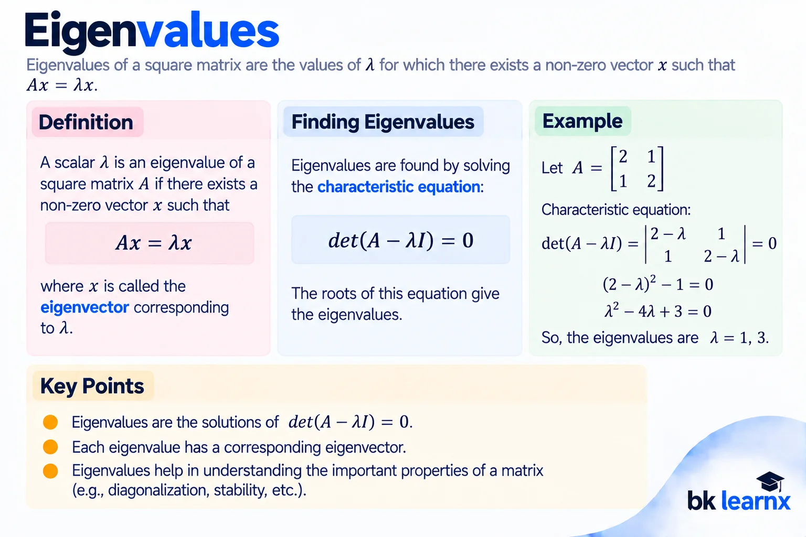

Linear Algebra
Linear Algebra Introduction
Linear Algebra Mathematics की वह branch है जिसमें Vectors, Matrices, Linear Equations, Vector Spaces, Linear Transformations तथा Eigenvalues जैसे concepts का अध्ययन किया जाता है।
Data Science, Machine Learning, Artificial Intelligence, Computer Graphics, Engineering, Physics और Optimization में Linear Algebra का बहुत महत्वपूर्ण उपयोग होता है।
Linear Algebra का मुख्य focus vectors, matrices और linear relationships को represent, calculate और analyze करना है।
1. Vectors: Introduction

Vector ऐसी mathematical quantity है जिसमें Magnitude और Direction दोनों होते हैं। इसे directed line segment या ordered components के रूप में represent किया जा सकता है।
Vector Representation
यहाँ i, j, k coordinate directions के unit vectors हैं।
Magnitude of a Vector
Types of Vectors
- Zero Vector: सभी components zero होते हैं।
- Unit Vector: जिसका magnitude 1 होता है।
- Equal Vectors: समान magnitude और direction वाले vectors।
- Parallel Vectors: जिनकी directions समान या opposite हो सकती हैं।
- Orthogonal Vectors: जिनके बीच angle 90° होता है।
2. Dot Product

Dot Product या Scalar Product दो vectors का ऐसा product है जिसका result एक Scalar होता है।
यदि a = (a₁,a₂,a₃) और b = (b₁,b₂,b₃), तो:
Important Properties
- a · b = b · a
- a · (b + c) = a · b + a · c
- a · a = |a|²
- यदि a · b = 0, तो non-zero vectors a और b perpendicular हैं।
3. Cross Product

Cross Product दो vectors का vector product है जिसका result एक नया vector होता है जो दोनों original vectors के perpendicular होता है।
Component Form
Properties
- a × b = −(b × a)
- a × a = 0
- a × (b + c) = a × b + a × c
- यदि vectors parallel हैं, तो a × b = 0.
4. Scalar Triple Product

तीन vectors का scalar triple product cross product और dot product को combine करके प्राप्त किया जाता है।
इसे determinant के रूप में भी calculate किया जा सकता है:
Scalar Triple Product का absolute value तीन vectors द्वारा बने parallelepiped का volume देता है।
5. Vector Triple Product
Vector Triple Product में तीन vectors के बीच cross और vector operations होते हैं।
इसे Vector Triple Product Identity या BAC-CAB Rule भी कहा जाता है।
6. Projection of a Vector

एक vector का दूसरे vector पर Projection उस vector के direction में पहले vector के component को represent करता है।
Scalar Projection
Projection का उपयोग Geometry, Physics, Computer Graphics, Data Science और Machine Learning में किया जाता है।
7. Matrix: Introduction

Matrix numbers, symbols या expressions को rows और columns के rectangular arrangement में represent करने का तरीका है।
यदि Matrix में m rows और n columns हैं, तो उसका order m × n होता है।
Applications
- Linear Equations
- Data Representation
- Computer Graphics
- Machine Learning
- Image Processing
- Scientific Computing
8. Algebra of Matrices
Matrix Algebra में matrices के बीच Addition, Subtraction, Scalar Multiplication और Matrix Multiplication जैसी operations की जाती हैं।
Equality of Matrices
दो matrices equal तभी होंगी जब उनका order समान हो और corresponding elements equal हों।
Scalar Multiplication
9. Addition of Matrices

दो matrices को add करने के लिए उनका order समान होना चाहिए। Corresponding elements को add किया जाता है।
Properties
- A + B = B + A
- (A + B) + C = A + (B + C)
- A + 0 = A
- A + (−A) = 0
10. Multiplication of Matrices

यदि A का order m × n और B का order n × p है, तो AB defined होगा और उसका order m × p होगा।
Matrix multiplication में first matrix की row को second matrix के column से multiply करके sum किया जाता है।
Important Properties
- Generally AB ≠ BA
- A(BC) = (AB)C
- A(B+C) = AB + AC
- (A+B)C = AC + BC
11. Special Types of Matrices

| Matrix Type | Definition / Condition |
|---|---|
| Null Matrix | जिसके सभी elements zero हों। |
| Unit / Identity Matrix | Main diagonal पर 1 और बाकी elements 0. |
| Square Matrix | Rows और columns की संख्या समान हो। |
| Symmetric Matrix | Aᵀ = A |
| Skew-Symmetric Matrix | Aᵀ = −A |
| Hermitian Matrix | A* = A |
| Skew-Hermitian Matrix | A* = −A |
| Orthogonal Matrix | AᵀA = AAᵀ = I |
| Unitary Matrix | A*A = AA* = I |
| Diagonal Matrix | Main diagonal के बाहर के सभी elements zero. |
| Triangular Matrix | Upper या Lower triangular form में entries zero होती हैं। |
12. Transpose of a Matrix and Properties

Matrix का Transpose प्राप्त करने के लिए उसकी rows को columns और columns को rows में बदल दिया जाता है।
Properties
- (Aᵀ)ᵀ = A
- (A+B)ᵀ = Aᵀ+Bᵀ
- (kA)ᵀ = kAᵀ
- (AB)ᵀ = BᵀAᵀ
- यदि A symmetric है, तो Aᵀ=A.
13. Determinant of a Matrix
Determinant केवल square matrix के लिए defined एक scalar quantity है। इसे generally |A| या det(A) से represent किया जाता है।
2 × 2 Determinant
Important Properties
- दो rows/columns interchange करने पर determinant का sign change होता है।
- यदि दो rows/columns equal हों, determinant zero होता है।
- यदि किसी row/column के सभी elements zero हों, determinant zero होता है।
- एक row/column को scalar k से multiply करने पर determinant भी k times हो जाता है।
- Triangular Matrix का determinant diagonal elements का product होता है।
- det(AB)=det(A)det(B).
14. Cramer's Rule

Cramer's Rule linear equations के system को determinants की सहायता से solve करने की method है।
दो equations के लिए:
a₂x + b₂y = c₂
Cramer's Rule तब directly useful है जब coefficient determinant non-zero हो।
15. Inverse of a Matrix

यदि square matrix A के लिए कोई matrix A⁻¹ ऐसा हो कि:
तो A⁻¹ को A का Inverse Matrix कहते हैं।
2 × 2 Matrix Formula
Inverse तभी exists करता है जब det(A) ≠ 0 हो।
Adjoint Method
16. Trace of a Matrix
Square matrix के principal/main diagonal elements के sum को Trace कहते हैं।
Trace केवल square matrix के लिए defined होता है।
17. Elementary Row / Column Transformations

Matrix को simplify करने, inverse निकालने और rank determine करने के लिए elementary row और column transformations का उपयोग किया जाता है।
Three Elementary Row Operations
- Row Interchange: Rᵢ ↔ Rⱼ
- Row Scaling: Rᵢ → kRᵢ, जहाँ k ≠ 0
- Row Replacement: Rᵢ → Rᵢ + kRⱼ
Column Operations
इसी प्रकार Cᵢ ↔ Cⱼ, Cᵢ → kCᵢ और Cᵢ → Cᵢ+kCⱼ operations apply की जा सकती हैं।
18. Gauss's Elimination Method

Gaussian Elimination linear equations को solve करने की method है जिसमें augmented matrix को elementary row operations की सहायता से upper triangular या row-echelon form में convert किया जाता है।
Steps
- Equations को augmented matrix में represent करें।
- Elementary row operations से first pivot के नीचे entries zero करें।
- Next pivot पर यही process repeat करें।
- Row-echelon / upper triangular form प्राप्त करें।
- Back substitution से unknown variables की values find करें।
19. Linear Dependence and Independence of Vectors


Vectors v₁,v₂,...,vₙ linearly dependent होते हैं यदि ऐसी coefficients c₁,c₂,...,cₙ exist करती हों, जो सभी zero न हों और:
यदि केवल trivial solution c₁=c₂=...=cₙ=0 possible हो, तो vectors linearly independent होते हैं।
20. Rank of a Matrix

Rank matrix में maximum number of linearly independent rows या columns को represent करता है।
Rank को r(A) या rank(A) से denote किया जाता है।
Meaning
Rank matrix में available independent information या independent directions की संख्या के बारे में बताता है।
21. Computing Rank through Determinants
Matrix की rank determine करने के लिए उसके non-zero minors को check किया जा सकता है।
यदि किसी matrix का सबसे बड़ा non-zero minor order r का है, तो matrix की rank r होगी।
Basic Principle
यदि n × n determinant non-zero है, तो rank(A)=n.
22. Computing Rank through Elementary Row Transformations
Matrix को elementary row operations द्वारा row-echelon form में convert किया जाता है। Row-echelon form में non-zero rows की संख्या matrix की rank के बराबर होती है।
23. Rank through the Concept of Independent Vectors
Matrix की rows या columns को vectors की तरह consider करके maximum linearly independent vectors की संख्या निकाली जा सकती है। यही संख्या matrix की rank होती है।
Rank = Maximum number of linearly independent rows = Maximum number of linearly independent columns.
24. Consistency of Equations

Linear equations का system consistent होता है यदि उसका कम-से-कम एक solution exist करता है। यदि कोई solution नहीं है, तो system inconsistent कहलाता है।
Rank Condition
For a system AX=B:
यदि common rank number of unknowns के बराबर है, तो unique solution मिल सकता है। यदि common rank unknowns से कम है, तो infinitely many solutions हो सकते हैं।
25. Eigenvalues and Eigenvectors — Eigen Pairs

यदि square matrix A और non-zero vector x के लिए कोई scalar λ ऐसा हो कि:
तो λ को Eigenvalue और x को corresponding Eigenvector कहते हैं। दोनों मिलकर Eigen Pair बनाते हैं।
Characteristic Equation
इस equation को solve करके eigenvalues प्राप्त की जाती हैं। फिर प्रत्येक eigenvalue के लिए:
solve करके corresponding eigenvectors प्राप्त किए जाते हैं।
26. Eigenvalues and Eigenvectors of Order Two and Three
For 2 × 2 Matrix
|a−λ b; c d−λ|=0
इससे quadratic characteristic equation प्राप्त होती है और उसके roots eigenvalues होते हैं।
For 3 × 3 Matrix
3 × 3 matrix के लिए characteristic equation सामान्यतः cubic polynomial होती है। उसके roots eigenvalues होते हैं। प्रत्येक eigenvalue के लिए (A−λI)x=0 solve करके eigenvector प्राप्त किया जाता है।
1. det(A−λI)=0 लिखें → 2. Eigenvalues निकालें → 3. प्रत्येक λ के लिए (A−λI)x=0 solve करें → 4. Eigenvectors लिखें।
27. Cayley-Hamilton Theorem

Cayley-Hamilton Theorem कहता है कि प्रत्येक square matrix अपनी characteristic equation को satisfy करती है।
यदि characteristic polynomial:
है, तो theorem के अनुसार:
इस syllabus में theorem का proof required नहीं है, लेकिन theorem की verification important है।
2 × 2 Form
यदि characteristic equation λ² − tr(A)λ + det(A)=0 है, तो A को λ की जगह रखने पर:
28. Use of Cayley-Hamilton Theorem in Inverse and Powers
Cayley-Hamilton theorem का उपयोग matrix की higher powers और inverse निकालने के लिए किया जा सकता है।
Inverse
यदि A invertible है और:
तो suitable rearrangement से A⁻¹ को A और I के terms में express किया जा सकता है:
यह 2 × 2 invertible matrix के characteristic equation से प्राप्त होता है।
Higher Powers
Cayley-Hamilton relation को rearrange करके A² को lower powers में express किया जा सकता है। इसी relation को repeatedly use करके A³, A⁴ आदि powers को simplify किया जा सकता है।
29. Introduction to Vector Space

Vector Space एक set V है जिसमें vector addition और scalar multiplication defined होते हैं तथा ये operations कुछ standard axioms satisfy करते हैं।
Main Requirements
- दो vectors का addition उसी space में होना चाहिए।
- Scalar multiplication का result उसी space में होना चाहिए।
- Addition associative और commutative होना चाहिए।
- Zero vector exist करना चाहिए।
- हर vector का additive inverse exist करना चाहिए।
- Scalar multiplication distributive properties satisfy करे।
Examples
- R²
- R³
- Polynomials का set
- Suitable matrices का set
- Functions के कुछ sets
30. Basis and Subspace

Basis
किसी vector space का Basis ऐसा set of vectors है जो उस space को span करता है और linearly independent होता है।
Subspace
Subspace किसी vector space का ऐसा subset है जो स्वयं vector space की सभी आवश्यक properties satisfy करता है।
Subspace Conditions
- Zero vector contain करे।
- Vector addition के under closed हो।
- Scalar multiplication के under closed हो।
31. Dimension
Vector space के किसी basis में मौजूद vectors की संख्या को उस vector space की Dimension कहते हैं।
उदाहरण के लिए R² की dimension 2 और R³ की dimension 3 है।
यदि किसी matrix के column space का basis r independent vectors contain करता है, तो उसकी dimension और matrix की rank r होती है।
32. Changing Basis
एक vector को अलग-अलग bases में अलग coordinate representation मिल सकती है। एक basis से दूसरे basis में coordinates convert करने की प्रक्रिया को Change of Basis कहते हैं।
यदि P change-of-basis matrix है, तो coordinate vectors के बीच relation convention के अनुसार P और P⁻¹ की सहायता से establish किया जाता है।
33. Linear Transformations

Linear Transformation एक mapping T:V→W है जो vector addition और scalar multiplication preserve करती है।
Matrix Representation
Finite-dimensional vector spaces में linear transformations को matrices द्वारा represent किया जा सकता है। यही concept Computer Graphics, Machine Learning और engineering transformations में important है।
34. Norms and Spaces
Norm किसी vector की length या size को measure करने वाली function है। इसे ||v|| से denote किया जाता है।
Common Euclidean Norm
Norm Properties
- ||v|| ≥ 0
- ||v|| = 0 iff v = 0
- ||cv|| = |c| ||v||
- ||u+v|| ≤ ||u|| + ||v|| — Triangle Inequality
Norms distance, magnitude, error measurement और optimization में उपयोगी हैं।
35. Orthogonal Complement

यदि V vector space का subspace W दिया गया है, तो W के सभी vectors के perpendicular vectors के set को Orthogonal Complement कहा जाता है और इसे W⊥ से denote करते हैं।
Orthogonal complement में मौजूद vectors W के प्रत्येक vector के साथ perpendicular होते हैं।
36. Projection Mapping

Projection Mapping में किसी vector या point को किसी subspace या direction पर project किया जाता है। Orthogonal projection में projection और residual/error component perpendicular होते हैं।
Projection onto a Vector
Projection Decomposition
जहाँ residual r, b के perpendicular होता है। Projection concept least squares, data fitting, computer graphics और machine learning में बहुत useful है।